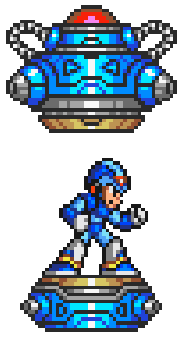
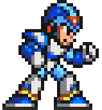

Becoming a Puppet platformer
Upgrading and using your tools is the key
Ensure that things are full screen, and on the correct screens.
Systems coming online
Thank you for being here
Thank you for being here.
I know there's quite a few interesting sessions happening right now, and I'd like to say thank you for coming to my session.
I want to show you all how to excel at the platform that is Puppet.
Let's analyze the critical components that make a successful platformer, like my friend Megaman here.
I know there's quite a few interesting sessions happening right now, and I'd like to say thank you for coming to my session.
I want to show you all how to excel at the platform that is Puppet.
Let's analyze the critical components that make a successful platformer, like my friend Megaman here.
Who will this help?
- Intermediate Puppet users
- Familiar with:
- R10k - Puppetfile directory environments
- Hiera
- Roles/profiles
- Beneficial to be familiar with:
- Git webhooks
- Aptly
Like the first stage in Megaman X, I'm not going to cover the basics of how to platform. If you aren't familiar with R10k, Hiera, or the concept of roles and profiles, it's going to be tough to follow along.
Meanwhile, if you've toyed with Git webhooks or Aptly in the past, you've got an edge here.
Meanwhile, if you've toyed with Git webhooks or Aptly in the past, you've got an edge here.
What is the problem?
- Small team vs. large enterprise
- Some users need more stability than others
- Teams need to own their configs
What is the problem?
- Often a small team needs to support the puppet infrastructure of a large enterprise
- Must be agile/responsive to changing needs
- Must be automated and scalable, yet highly tailored
- Not all users of a puppet infrastructure are flexible
- May not be using continuous integration
- Must be able to depend on the platform being stable
- Multiple existing teams need ease of configuration for their roles
- Standardized roles/profiles model can't scale in this way
What is the end goal?
- Regular releases that remain stable after being published
- We can support as many teams as you can throw at us
- Our code is flexible enough to handle varying needs and changing directions
- Even our automation is automated
- Constraints:
- Everyone has to deal with the same set of modules
- Software (packages) must install reliably
How do we know when we've won?
- Regular releases that remain stable after being published
- If it worked once, it always will on that release
- Support multiple teams
- Support defaults that vary by business unit
- Allow for role/profile usage at scale
- Flexibility
- New modules, different modules, changes to defaults are easy
- Automatability
- Fits into a continuous integration model for you and your teams
- What are the constraints?
- Teams must select from a specific list of modules made available to everyone
- Supporting teams using four different apache modules is a nightmare
- Decide on a module for a particular functionality. If it no longer fits the bill, change it for a later release, but don't break the old release.
- Software (packages) must install reliably
- package{'xyz': ensure => present} should always install the same version
- Many things can break from release to release of packages that requires tweaks of puppet modules. This leads to "it worked yesterday" syndrome
Upgrade: Releases (Environments)
- r10k - Directory environments made easy
- Versioned releases
- Keep releases stable, encourage utilizing new releases for bugfixes/feature improvements
- Small set of facts provide insight
- ::server_environment
- ::server_role
- r10k - If you're not already using it, start today. Literally. This makes it beyond simple to handle your environments
- Versioned releases
- Separate Puppetfile branch for each release
- The term "release" is the Puppet "environment"
- Keep releases stable, encourage utilizing new releases for bugfixes/feature improvements
- Minimal backporting of fixes to minimize maintenance needs
- Have a ‘development' or otherwise release that is unstable for testing
- Small set of facts provide insight
- ::server_environment - Actual dev/stg/prd environment
- ::server_role - Definable by teams to isolate server types
Upgrade: Hiera

- Separate tiers of logic
- Make your Hiera configs robust
- Hiera-eyaml
- Hiera-file
The second upgrade you need to win: Hiera
If you don't know about Hiera yet, go learn about it while you're here
If you don't know about Hiera yet, go learn about it while you're here
- Separate tiers of logic
- Global - Infrastructure defaults. I.E. what repository server to use based on geographic location
- Team - Per-team default settings, as well as role definitions
- Release - Per-release default settings. Allows you to release different versions of modules with sane defaults without affecting old releases
- Make your Hiera configs robust
- Hiera-eyaml - Give your users the option to encrypt their hiera data
- Hiera-file - Sometimes it’s just easier to put a whole file in hiera
- Binaries, certificates, etc…
Example Hiera.yaml

:hierarchy:
- "node/%{::fqdn}"
# Team specific settings. Controlled by team's git repositories
- "team/%{::team_id}/environment/%{::server_environment}/role/%{::server_role}"
- "team/%{::team_id}/environment/%{::server_environment}/defaults"
# Release specific settings. Controlled by the Puppetfile repository
- "../environments/%{::environment}/hieradata/nibiru_defaults"
# Location/Environment default settings. Controlled by global repository
- "global/location/%{::physical_location}/environment/%{::server_environment}"
- "global/location/%{::physical_location}/defaults"
- "global/common"
Here is a rough estimate of what your hierarchy would look like.
We classify the node, then all team specific stuff, so that it takes precedence over defaults.
After that our release defaults (using the environment variable, remember that puppetlabs isn't the greatest at naming)
And finally all of our global configs, which can vary based on physical location, actual environment, or any other number of variables.
We classify the node, then all team specific stuff, so that it takes precedence over defaults.
After that our release defaults (using the environment variable, remember that puppetlabs isn't the greatest at naming)
And finally all of our global configs, which can vary based on physical location, actual environment, or any other number of variables.
Upgrade: Profiles
- Why should you use them?
- Wrap upstream modules
- Free modules to only do what they care about
- Handle the dependencies (I.E. Tomcat needs Java)
- Ability to define resources in your Hiera configs
- Centralize your maintenance work
- Use more upstream, and modify your profiles to tie them into your infrastructure
- Dependency structures are easier to enforce from a profile
- If you aren’t using profiles yet, you should be
- Your upstream modules can change, and you can handle your dependencies and ordering in a sane manner
- Good modules, as with good tools, 'do one thing well'. Keep them simple
- Almost every single Puppet user in their first module starts by requiring the software they depend on, instead of trusting that it'll be there for them. The missing instruction is: Use a profile to ensure it's there first.
- Resources are great, until you don't know how to logically instantiate them. Using profiles lets you instantiate them as simple hashes in your Hiera data.
- (I.E. profile::apache::vhosts: {} )
Upgrade: Dynamic roles
- You've been told wrong
- Roles should not be a module
- Use your Hiera config
- Teams can create arbitrary roles specific to them
- Roles define all class parameters within the same hiera file as their class definition
- Some people recommend making a role module. Please don't
- This is not scalable for dozens of teams with dozens of roles that may overlap in name but not configuration
- This requires regular updates to a module (code) for rapidly changing data.
- Didn’t Puppetlabs build something for separating code from data?
- Why wouldn’t we be using just that?
- Instead of a module, use a Hiera config
- There's this cool thing called hiera_include that will allow for you to just define your class inclusions in hiera
- To do this, you must have a default class (hint: profile) assigned to all servers that does a hiera_include(‘classes’)
- Teams can create arbitrary roles specific to them
- Allows overlapping role names from multiple teams without collision
- Roles define all class parameters within the same hiera file as their class defineinition
- Teams can see what classes they will get, and what settings will be set in a single place
Don't use a ‘roles' module
Pull in your ally: Aptly
- Aptly - http://www.aptly.info/
- Control package availability using snapshots
- Use Hiera to manage tying environments to their repo: $::environment
- Eliminates “it worked yesterday” syndrome
- Aptly isn't something that directly fits into typical puppet architectures, but when you treat Puppet as a platform, it's a formidible ally.
- Aptly is a repository management utility
- Caveat: May only work with Debian/Ubuntu (Haven’t tried RH)
- Allows managed mirroring of repositories as you would a git repo
- Control package availability using snapshots
- Each release can be tied to a set of packages in a particular state
- Publish snapshots to a path to match your release
- Use Hiera to manage tying environments to their repo
- Dynamic URLs for your repository mirrors based on $::environment
- Eliminates “it worked yesterday” syndrome
- Packages and Puppet releases in lock-step.
Give teams control
- Give teams a git repository for placing their hiera configuration/roles
- Structure for clarity and ease of use
- Environment/<env>/role/<server_role>.yaml format for team defined roles.
- Define ‘::server_role’ on the ENC
- Every team gets their own space within a git repository where they can establish their roles and provide configuration for them
- Your puppetmasters will need read access, using public/private keys if secure, to your repo
- Structure their repositories for clarity and ease of use
- Environment/[dev|stg|prd] folders for environment isolation
- Each environment should have its own Defaults.yaml
- Environment/<env>/role/<server_role>.yaml format for team defined roles.
- Define ‘::server_role’ on the ENC
- This must be easy for users to access/set
- Since this is divided by team, every team can have a ‘webserver’ role
Glue it all together
- Automate Hiera updates
- Utilize r10k to deploy your releases
- Utilize a single script to update your global hiera settings as well as your team hiera settings
- Trigger that script based with git webhooks
- All puppetmasters can be kept up to date near instantly
- Utilize r10k to deploy your releases
- Adrien Thebo presented a great workflow at PuppetConf 2014
- http://philzim.com/2014/05/02/an-automated-r10k-workflow-that-works
- Use your existing CI, along with git webhooks, to trigger deploys on branch creation/update.
Get visibility - Enviera
- Warning: Shameless plug
- What are the default settings for XYZ?
- What Hiera files are being used?
- Enviera: A simple tool for inspecting your Hiera environment
- Warning: Shameless plug
- It can be difficult to fully understand what your platform provides for defaults
- Have to look in a few different repos/locations to find defaults
- Hiera is great to find _A_ value, but not _ALL_ default values
- I built a tool, Enviera, to help provide this information
- Pass an ‘environment’ (all facts set on a node, i.e. “puppet node find”)
- Returns all Hiera files in use or all values available
- FAR from perfect or even finished, but helpful for troubleshooting/learning
- I welcome feedback
The final stage
- Teams now control their configurations and roles
- Platform remains stable
- Releases are flexible
- Maintenance is minimal
- Continuous integration is a breeze
- Teams now control their configurations and roles
- Can iterate without interfering with other teams
- Can share or modify roles from a git commit (Built in change log!)
- Platform remains stable
- Build user trust/confidence by not being fragile
- Only a few global settings to maintain by platform support team
- Releases are flexible
- Can change module versions or sources without side-effects
- Maintenance is minimal
- Profiles class
- Puppetfile
- Release hiera defaults
- Aptly package snapshot published per release
- Continuous integration is a breeze
- Platform can be continuously iterated on without breaking users
- Users can tie their CI into the platform, and trust its stability